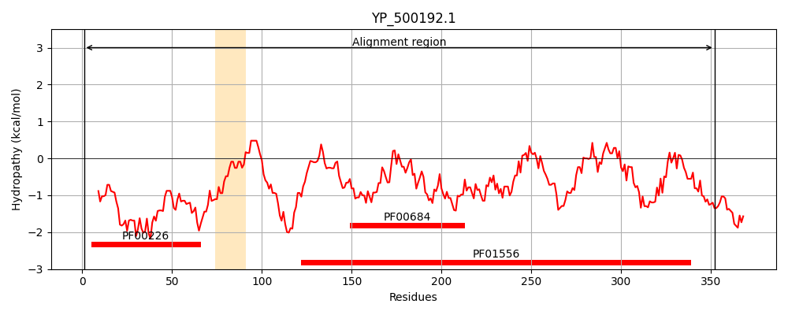
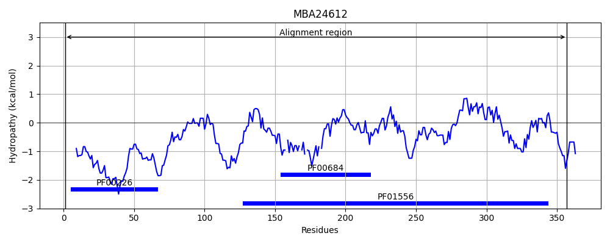
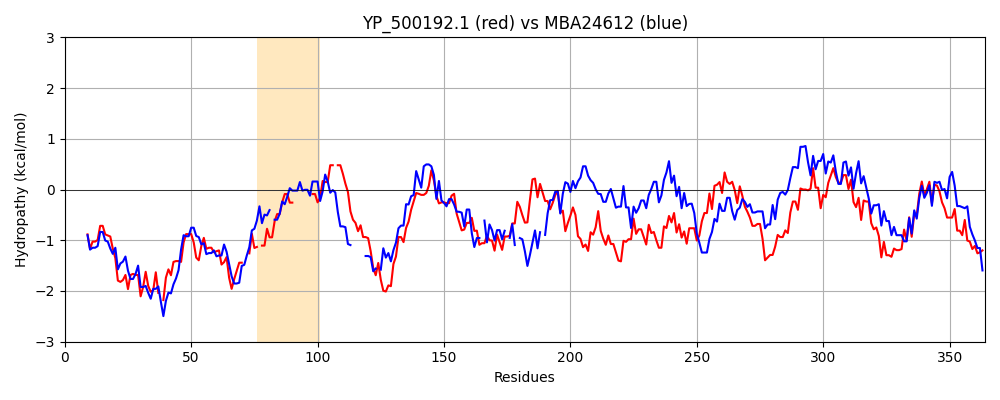

Hit Accession: MBA24612
Hit TCID: 8.A.192.1.4
Hit Description: gnl|BL_ORD_ID|6465 gnl|TC-DB|MBA24612.1|8.A.192.1.4 MAG: molecular chaperone DnaJ [Candidatus Marinimicrobia bacterium]
Mach Len: 364
e:0.000000
Query TMS Count : 1
Hit TMS Count: 0
TMS-Overlap Score: 0.000000
Predicted Substrates:CHEBI:14911;protein
BLAST Alignment:
Score: 685 , Bit scores: 268 bits, E-value: 2.6e-87, Alignment length: 364, Percentage identity: 41
Query: 1 MAKRDYYEVLGISKDASKDEIKKAYRKLSKKYHPDINK-EEGADEKFKEISEAYEVLSDDNKRASYDQFGH--DGPQ-GFGGQGFNGSDFG-------GFSGFGGGG-FEDIFSSFFGGGRQRDPNAPQKGDDLQYTMTLTFEEAVFGTTKEISIRKDVTCETCHGDGAKPGTSKKTCSYCNGAGHVAVEQNTILGRVRTEQVCPKCNGSGQEFEEACPTCHGKGTENKTVKLEVKVPEGVDNEQQIRLAGEGSPGVNGGPAGDLYVVFRVKPSETFKRDGDDIYYKLNVSFPQAALGDEIKIPTLNNEVMLTIPAGTQTGKQFRLKEKGIKNVHGYGYGDLYVDIKVVTPTKLTDRQKELMKE 352
M KRDYYE+LG+ K+AS++EIKKAYRK++ KYHPD N + ++ KFKE +EAY VLSD K+ YDQFGH DG GF G GF G+DF GFGGGG FED FS G R+ N +G +L+ T+ LT EE G K I +++ C C G K GT C CNG+G V ++ G++ C C G G+ C C G G + + V +++KVP GV + + L +G+ P GDL V F + F R+ DD+ ++ +S QA LGD+I+IPTL+ L IP+G Q+G+ R++ KG++N+ G G GD+ V +++VTPTK++ +K L ++
Sbjct: 1 MLKRDYYEILGVEKNASENEIKKAYRKMAMKYHPDKNPGNKESESKFKEAAEAYSVLSDTQKKNQYDQFGHAFDGSDNGFQG-GFTGADFDLSDALRTFMDGFGGGGAFEDFFS-----GNPRN-NTQSRGSNLKITIKLTLEEISGGIDKIIKLKRFEPCSDCDXTGCKKGTLPXRCQXCNGSGQVRRXSRSMFGQMVNVVTCNNCGGKGEIVLNPCRACSGDGVKKQGVDVKIKVPAGVASGNYMTLKSQGNATSMKNPRGDLIVFFEEIEHKFFTRNEDDVIVEVQLSLTQAILGDKIEIPTLSGLAQLKIPSGIQSGQVLRMRGKGLQNLRGSGKGDMLVKVQLVTPTKISGEEKILYEK 357 | Protein Hydropathy Plots: |
|---|
|  |  |
Pairwise Alignment-Hydropathy Plot:
|
|---|
|  |